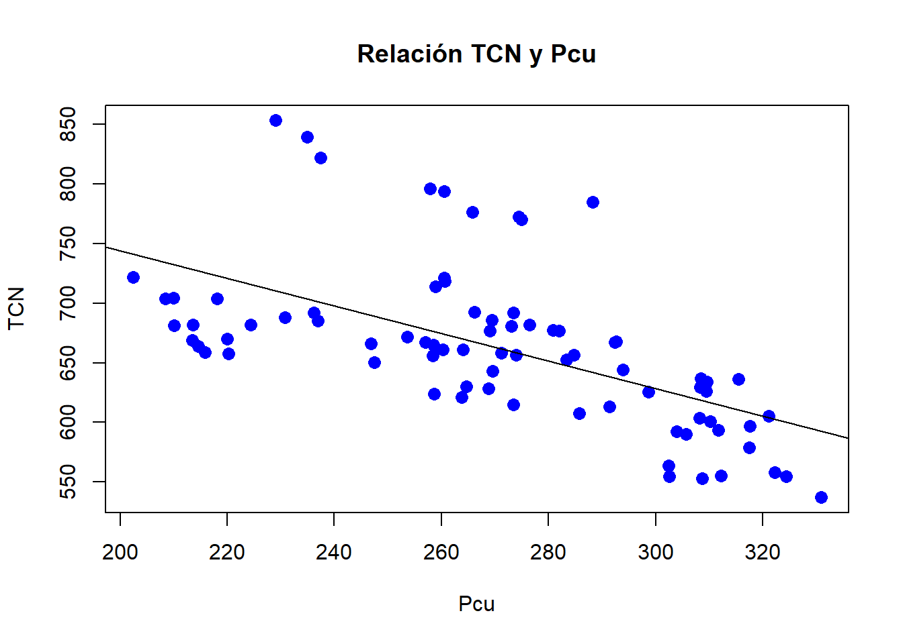
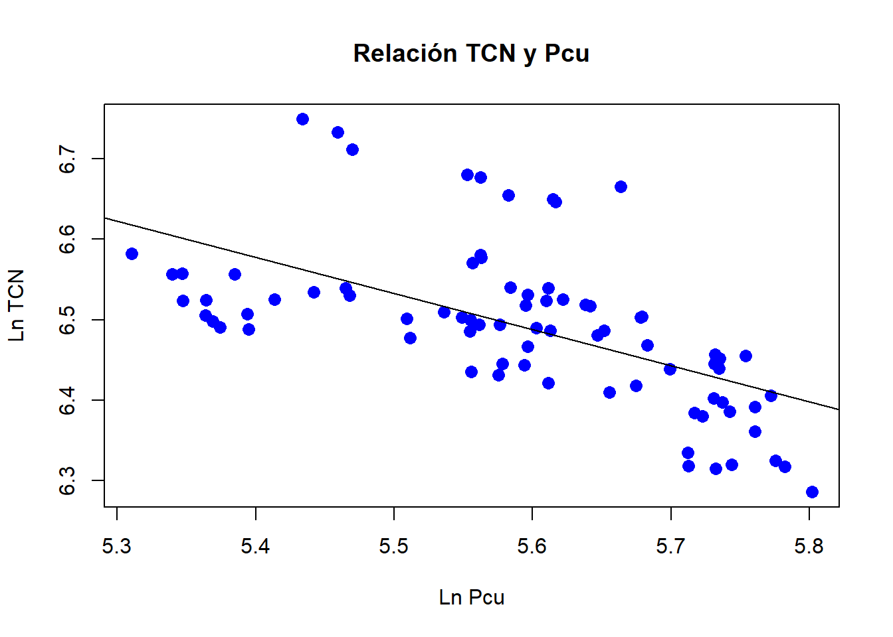
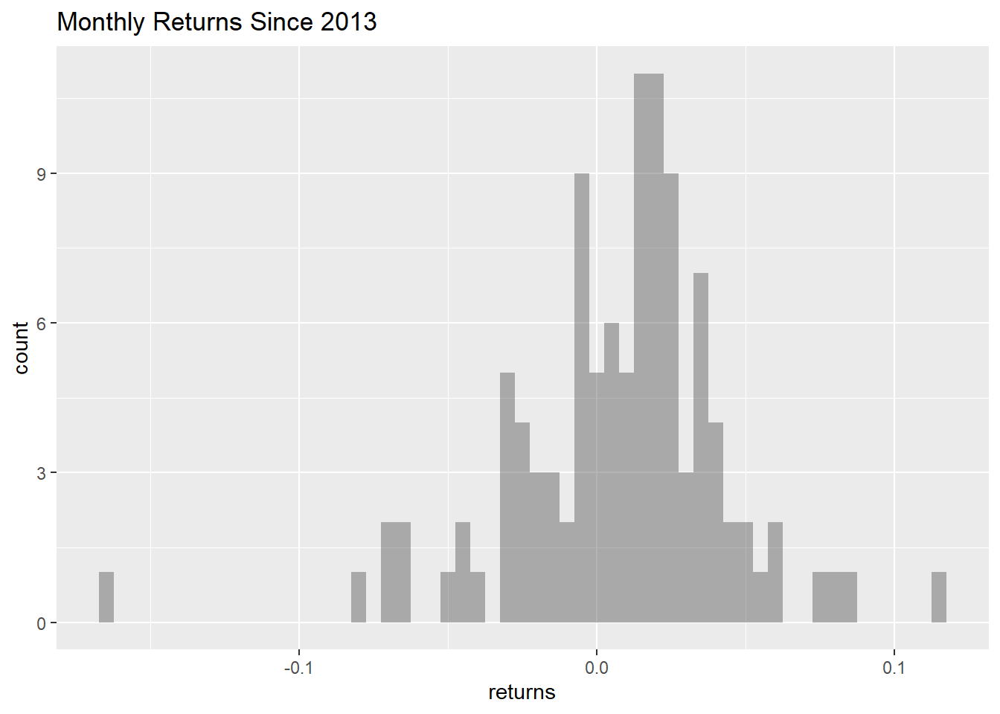
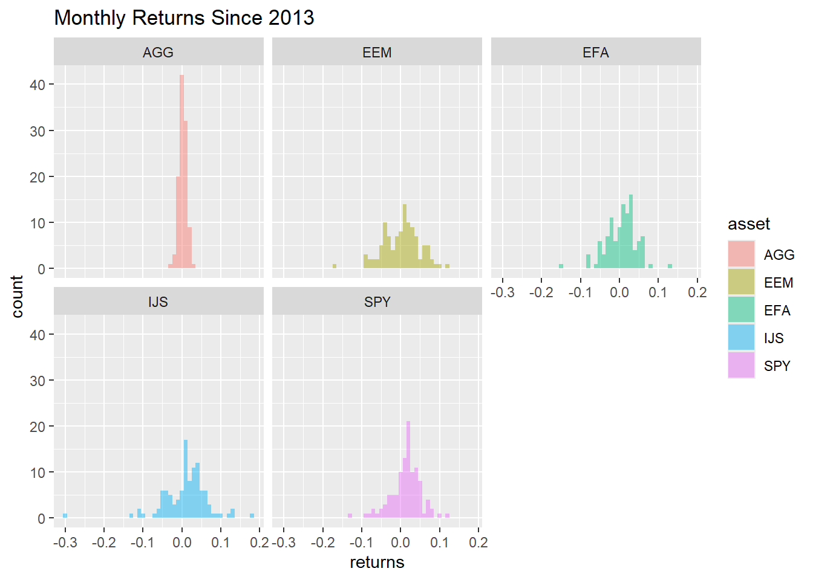
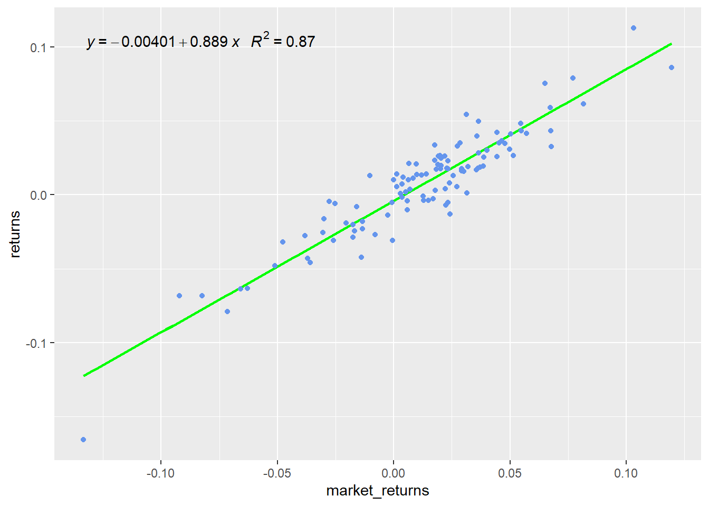

En términos simples, una regresión lineal corresponde al intento matemático y estadístico de analizar como un conjunto de datos se adapta o no a un comportamiento lineal, ya sea esta relación directa o no.
Por ejemplo la oferta en donde el precio depende de la cantidad demandada:
La regresión lineal, corresponde al intento de estimar los valores del intercepto o constante y de la pendiente utilizando un metodo matemático, en base a una muestra para extrapolar el comportamiento de una población. Por ejemplo, pretendemos saber si la muestra utilizada nos permite confirmar el signo de la pendiente y el valor de la misma.
Proyección de demanda
Se tiene un proyecto para una empresa de exportación, en donde se pretende realizar una estimación del Tipo de cambio nominal (TCN de ahora en adelante).
Pregunta ¿por qué podría ser relevante el TCN para un proyecto como este? ¿Existe otro tipo de proyectos en dónde también podría ser relevante?
Para esto, el especialista econométrico plantea que el TCN posee una relación con variables como el precio del cobre (Pcu) y el dolar index (DXY).
¿Cuál es la razón de pensar en que existe una relación entre el TCN y el PCU? ¿Para el DXY?
Esto corresponde a una parte importante de la modelación; plantear la relación teórica entre las variables.
Call:
lm(formula = TCN ~ `DXY Index`, data = data_subset)
Residuals:
Min 1Q Median 3Q Max
-78.329 -24.316 -7.695 11.964 150.390
Coefficients:
Estimate Std. Error t value Pr(>|t|)
(Intercept) -124.5077 92.0229 -1.353 0.18
`DXY Index` 8.3562 0.9744 8.575 7.9e-13 ***
---
Signif. codes: 0 '***' 0.001 '**' 0.01 '*' 0.05 '.' 0.1 ' ' 1
Residual standard error: 47.88 on 77 degrees of freedom
(1 observation deleted due to missingness)
Multiple R-squared: 0.4885, Adjusted R-squared: 0.4819
F-statistic: 73.54 on 1 and 77 DF, p-value: 7.904e-13
modelo_02 <-lm(TCN ~ Pcu, data = data_subset)summary(modelo_02)
Call:
lm(formula = TCN ~ Pcu, data = data_subset)
Residuals:
Min 1Q Median 3Q Max
-70.99 -36.83 -11.43 23.39 142.63
Coefficients:
Estimate Std. Error t value Pr(>|t|)
(Intercept) 975.5807 49.1646 19.843 < 2e-16 ***
Pcu -1.1565 0.1807 -6.402 1.1e-08 ***
---
Signif. codes: 0 '***' 0.001 '**' 0.01 '*' 0.05 '.' 0.1 ' ' 1
Residual standard error: 54.08 on 77 degrees of freedom
(1 observation deleted due to missingness)
Multiple R-squared: 0.3473, Adjusted R-squared: 0.3389
F-statistic: 40.98 on 1 and 77 DF, p-value: 1.103e-08
Observamos la relación en un gráfico de dispersión:
plot(data_subset$Pcu, data_subset$TCN, pch =16, cex =1.3, col ="blue", main ="Relación TCN y Pcu", xlab ="Pcu", ylab ="TCN")abline(lm(TCN ~ Pcu, data = data_subset))

¿Cómo interpretaría usted estos valores?
¿Existe alguna particularidad en los valores de la estimación? Los valores asociados a los parámetros estimados son particularmente grandes (especialmente el valor de la constante).
Una solución a esto, muy utilizada en la práctica, es la utilización de los logaritmos de las variables. Esto tiene dos ventajas:
Soluciona problemas de escala.
Permite la interpretación en porcentajes.
Con la regresión logaritmos:
modelo_03 <-lm(ln_tcn ~ ln_pcu, data = data_subset)summary(modelo_03)
Call:
lm(formula = ln_tcn ~ ln_pcu, data = data_subset)
Residuals:
Min 1Q Median 3Q Max
-0.11939 -0.05259 -0.01125 0.04046 0.20579
Coefficients:
Estimate Std. Error t value Pr(>|t|)
(Intercept) 8.99887 0.39263 22.919 < 2e-16 ***
ln_pcu -0.44835 0.07021 -6.386 1.18e-08 ***
---
Signif. codes: 0 '***' 0.001 '**' 0.01 '*' 0.05 '.' 0.1 ' ' 1
Residual standard error: 0.08006 on 77 degrees of freedom
(1 observation deleted due to missingness)
Multiple R-squared: 0.3462, Adjusted R-squared: 0.3377
F-statistic: 40.78 on 1 and 77 DF, p-value: 1.181e-08
plot(data_subset$ln_pcu, data_subset$ln_tcn, pch =16, cex =1.3, col ="blue", main ="Relación TCN y Pcu", xlab ="Ln Pcu", ylab ="Ln TCN")abline(lm(ln_tcn ~ ln_pcu, data = data_subset))

¿Cómo analizar una regresión?
Significancia individual
Por ejemplo para la constante, se evalua la siguiente hipótesis:
Se busca el poder rechazar la hipótesis nula, ¿pero por qué?
Este proceso se puede realizar de dos maneras (hay más):
Estadístico calculado
Por ejemplo para el caso de la constante, este valor corresponde a 2,081 según la siguiente fórmula:
\[\begin{equation}
t_{calculado} = \frac{Coeficiente}{\text{error estándar del coeficiente}}
\end{equation}\]
lo que debe contrastarse con valores de tabla, según el siguiente detalle:
\[\begin{equation}
t_{tabla} = t-student_{10\%, n - 1}
\end{equation}\]
Este valor de probabilidad se evalua generalmente al 10%, al 5% y al 1%, y se le denomina valor significativo.
P-Valor
Corresponde a la probabilidad acumulada por el valor t calculado, considerando el espacio desde el estadístico hacia el final o inicio de la distibución.
Se contrasta contra el valor de significancia. En caso de P-valor sea menor que el nivel de significancia, ya sea (1%, 5% o 10%), se rechaza la hipótesis nula.
Significancia global
Se aplica lo mismo, pero considerando el siguiente test:
No se considera la constante con una distribución F.
Bondad del Ajuste
Se relaciona con el valor del R cuadrado y R cuadrado ajustado. Nos habla del ajuste lineal del modelo. El segundo considera el ajuste por el número de variables independientes.
Veamos esto en relación al último modelo calculado:
modelo_03 <-lm(ln_tcn ~ ln_pcu, data = data_subset)summary(modelo_03)
Call:
lm(formula = ln_tcn ~ ln_pcu, data = data_subset)
Residuals:
Min 1Q Median 3Q Max
-0.11939 -0.05259 -0.01125 0.04046 0.20579
Coefficients:
Estimate Std. Error t value Pr(>|t|)
(Intercept) 8.99887 0.39263 22.919 < 2e-16 ***
ln_pcu -0.44835 0.07021 -6.386 1.18e-08 ***
---
Signif. codes: 0 '***' 0.001 '**' 0.01 '*' 0.05 '.' 0.1 ' ' 1
Residual standard error: 0.08006 on 77 degrees of freedom
(1 observation deleted due to missingness)
Multiple R-squared: 0.3462, Adjusted R-squared: 0.3377
F-statistic: 40.78 on 1 and 77 DF, p-value: 1.181e-08
¿Cómo aplicamos esto?
Teniendo las estimaciones del tipo de cambio, deberíamos poder generar las estimaciones de las cantidades a vender. Conociendo el precio, podríamos multiplicar todos los factores y obtenemos nuestro valor inicial.
Desde este punto, solo queda poder aplicar un crecimiento a estas ventas para los otros años a estimar.
Esto podemos explicarlo partiendo desde una pregunta:
Tiene dos modelos de estimación de sus ventas: el primero, en base a un modelo econométrico y el segundo en base a una pregunta realizada a sus propios vendedores, sobre cuánto esperan vender ellos. ¿En cuál estimación o proyección confía más?
Por lo demás, existe un problema práctico sobre dichos modelos, si lo vemos en su especificación estimamos el siguiente modelo:
¿Cuál es la temporalidad de la estimación? ¿Qué implica esto?
Modelo CAPM
Debemos ahora aplicar los contenidos vistos relacionados con regresión simple. Un caso conocido en finanzas corresponde al modelo CAPM, que relaciona los retornos de un activos o portafolio con los retornos del mercado.
En base a esto, sabemos que la regresión simple posee la siguiente especificación teórica:
\[ y = \alpha + \beta * x \]
n donde \(y\) corresponde a la variable dependiente, \(x\) corresponde a la variable independiente, \(\alpha\) corresponde al intercepto y \(\beta\) corresponde a la pendiente.
Dicho ejercicio corresponde al intento de estimar de manera empirica los valores para una ecuación lineal; anteriormente los ejercicios que utilizan ecuaciones de este tipo asumían los valores dados y no ahondaban en el análisis estadístico que hay detrás de su estimación.
En base a esto CAPM en términos estimados corresponde a lo siguiente:
Por lo general los retornos se calculan como la variación porcentual entre dos fechas, en este caso mensuales. Una alternativa es calcularlo utilizando variaciones en logaritmo lo que es muy utilizado por profesionales de economía y finanzas.
Esto se puede cambiar variando el method entre "discrete", "log", "difference".
# Cálculo del retorno usando logaritmosasset_returns_xts <-Return.calculate(prices_monthly,method ="log") %>%na.omit()head(asset_returns_xts, 3)
# Generación de data frame desde archivo xtsasset_returns_dplyr_byhand <- prices %>%to.monthly(indexAt ="lastof", OHLC =FALSE) %>%# convert the index to a datedata.frame(date =index(.)) %>%# now remove the index because it got converted to row namesremove_rownames() %>%gather(asset, prices, -date) %>%group_by(asset) %>%mutate(returns = (log(prices) -log(lag(prices)))) %>%select(-prices) %>%spread(asset, returns) %>%select(date, all_of(symbols)) %>%na.omit()
Datos en formato long
# Orientación del data frame en formato longasset_returns_long <- asset_returns_dplyr_byhand %>%gather(asset, returns, -date) %>%group_by(asset)head(asset_returns_long, 3)
En este caso, calcularémos el modelo CAPM para un portafolio de activos. Para esto, debemos calcular el retorno ponderado del portafolio en base a las distintas ponderaciones de cada activos en el portafolio. Especificamos las ponderaciones:
# Pesos para cálculo de portafoliow <-c(0.25,0.25,0.20,0.20,0.10)
Cálculo del retorno del portafolio
# Cálculo del retorno ponderado del portafolioportfolio_returns_tq_rebalanced_monthly <- asset_returns_long %>%tq_portfolio(assets_col = asset,returns_col = returns,weights = w,col_rename ="returns",rebalance_on ="months")
Histograma de los retornos
# Histograma de los retornos del portafolioportfolio_returns_tq_rebalanced_monthly %>%ggplot(aes(x = returns)) +geom_histogram(alpha =0.45, binwidth = .005) +ggtitle("Monthly Returns Since 2013")

Histograma por activo
# Histograma de los retornos por activosasset_returns_long %>%ggplot(aes(x = returns, fill = asset)) +geom_histogram(alpha =0.45, binwidth = .01) +facet_wrap(~asset) +ggtitle("Monthly Returns Since 2013") +theme_update(plot.title =element_text(hjust =0.5))

Histograma por activo (variación)
# Histograma de los retornos por activosasset_returns_long %>%ggplot(aes(x = returns)) +geom_density(aes(color = asset), alpha =1) +geom_histogram(aes(fill = asset), alpha =0.45, binwidth = .01) +guides(fill =FALSE) +facet_wrap(~asset) +ggtitle("Monthly Returns Since 2013") +xlab("monthly returns") +ylab("distribution") +theme_update(plot.title =element_text(hjust =0.5)) +guides(scale ="none")
knitr::kable( beta_assets_show,format ="latex", # or omit this if rendering to HTMLbooktabs =TRUE,digits =2)
Análisis
Debemos realizar el análisis en base a los valores obtenidos para los coeficientes. Cabe mencionar, que tenemos un mayor interés en encontrar significancia en el parámetro relacionado con la pendiente y no en el relacionado con el intercepto.
Por otra parte, ¿qué significa que el parámetro sea mayor o menor que 1?
Análisis gráfico
Podemos generar una regresión considerando que corresponde a la línea que atraviesa entre los puntos de ambas variables. Para esto generamos un gráfico de puntos entre X e Y, considerando la relación entre los retornos del portafolio y los retornos del mercado.
Podemos también agregar al gráfico la éxpresión de la regresión calculada:
data <- portfolio_returns_tq_rebalanced_monthly %>%mutate(market_returns = market_returns_tidy$returns) my.formula <- y ~ xp <-ggplot(data = data, aes(x = market_returns,y = returns)) +geom_smooth(method ="lm", se=FALSE, color="green", formula = my.formula) +stat_poly_eq(formula = my.formula, aes(label =paste(..eq.label.., ..rr.label.., sep ="~~~")), parse =TRUE) +geom_point(color ="cornflowerblue")p

Tarea
Calcule y analice la regresión entre los retorno del portafolio y los retornos del mercado. Genere conclusiones sobre la significancia y valores de los parámetros.